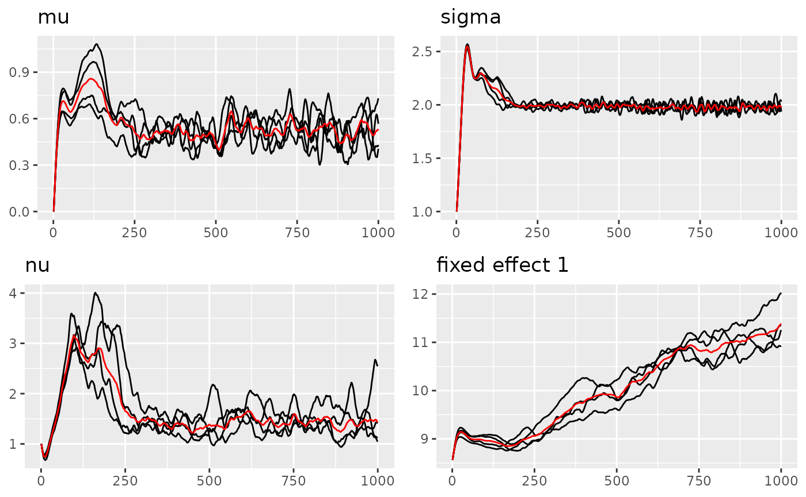
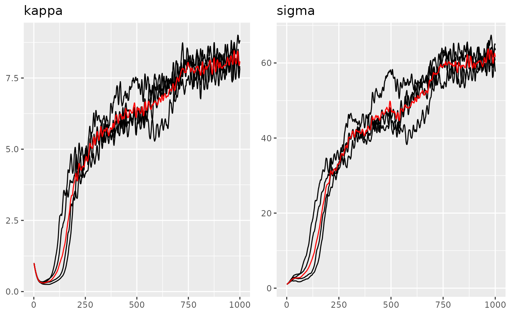
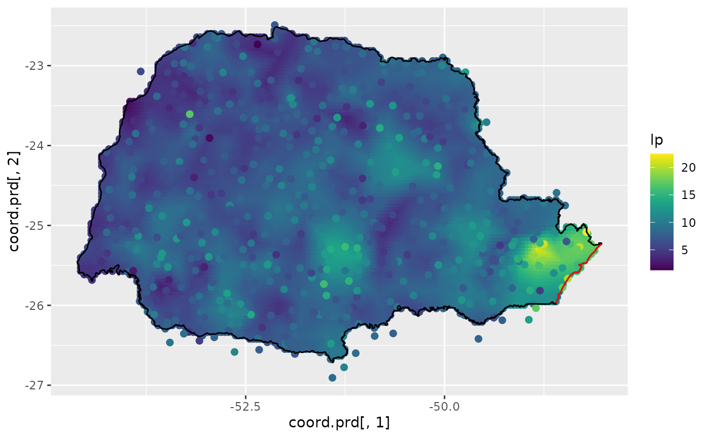

Ngme2 - A new Flexible R Package for Latent non-Gaussian Models
2023-08-27
ngme2.RmdIntroduction
In this vignette we provide a brief introduction to the
ngme2 package.
Ngme2 (https://github.com/davidbolin/ngme2) is the updated
version of Ngme, a package for estimating latent
non-Gaussian models for repeated measurement data. Ngme2
follows a hierachical structure, differnet components (latent processes,
different types of noises) are flexible to change and combine.
1 Features
- Support temporal models like AR(1), Ornstein−Uhlenbeck and random walk processes, and spatial models like Matern fields.
- Support latent processes constructed by non-Gaussian noises (normal inverse Gaussian(NIG), generalized asymmetric Laplace (GAL)).
- Support non-Gaussian, and correlated measurement noises.
- Support doing prediction at unknown locations.
- Support latent processes and random-effects model for longitudinal data.
- Support the bivariate type-G model, which can model 2 non-Gaussian fields jointly (Bolin 2020).
- Support the separable space-time model.
2 Model Framework
The package Ngme2 provides methods for mixed effect
models in the following form:
\[ {\bf Y}_{ij} = {\bf x}^T_{ij} {\bf \beta} + {\bf d}^T_{ij} {\bf U}_i + W_i(t_{ij}) + \epsilon_{ij}, \qquad j=1 \ldots n_i, i=1,\ldots,m \]
- \(m\) is the number of subjects, \(n_i\) is the number of observations for each subject,
- \(Y\) is the response variable,
- \({\bf X}\) is the matrix of fixed effects explanatory variables,
- \({\bf \beta}\) is the fixed effects,
- \({\bf X}\) is the matrix of random effects explanatory variables,
- \(\bf U\) is the random effects,
- \(W_i(t_{ij})\) is a stochastic process driven by Gaussian or non-Gaussian noise,
- \(\epsilon\) is measurement error.
Here is a simple template for using the core function
ngme to model the single response:
ngme(
formula=Y ~ x1 + x2 + f(index, model="ar", noise="nig"),
data=data.frame(Y=Y, x1=x1, x2=x2, index=index),
noise = noise_normal()
)Here, function f is for modeling the stochastic process
W with Gaussian or non-Gaussian noise, we will discuss this later.
noise stands for the measurement noise distribution. In
this case, the model will have a Gaussian likelihood.
3 Non-Gaussian Model
Here we assume the non-Gaussian process is a type-G Lévy process, whose increments can be represented as location-scale mixtures: \[\gamma + \mu V + \sigma \sqrt{V}Z,\] where \(\gamma, \mu, \sigma\) are parameters, \(Z\sim N(0,1)\) and is independent of \(V\), and \(V\) is a positive infinitely divisible random variable. It results in the following form, where \(K\) is the operator part:
\[ KW|V \sim N(\gamma + \mu V, \sigma^2 \, diag(V)), \] also, \(\mu\) and \(\sigma\) can be non-stationary.
One example in Ngme2 is the normal inverse Gaussian
(NIG) noise, in this case, \(V\)
follows Inverse Gaussian distribution with parameter \(\nu\) (IG(\(\nu\), \(\nu\))). See ?nig for more
details.
4 Parameter Estimation
- Ngme2 does maximum likelihood estimation through preconditioned stochastic gradient descent.
- Multiple chains are run in parallel for better convergence checks.
See Model estimation and prediction for more details.
Ngme Model Structure
Specify the driven noise
There are 2 types of common noise involved in the model, one is the
innovation noise of a stochastic process, one is the measurement noise
of the observations. They can be both specified by
noise_<type> function.
For now we support normal, NIG, and GAL noises.
The R class ngme_noise has the following interface:
library(INLA)
library(splancs)
library(lattice)
library(ggplot2)
library(grid)
library(gridExtra)
library(viridis)
library(ngme2)
# load_all()
noise_normal(sigma = 1) # normal noise
#> Noise type: NORMAL
#> Noise parameters:
#> sigma = 1
noise_nig(mu = 1, sigma = 2, nu = 1) # nig noise
#> Noise type: NIG
#> Noise parameters:
#> mu = 1
#> sigma = 2
#> nu = 1
noise_nig( # non-stationary nig noise
B_mu=matrix(c(1:10), ncol=2),
theta_mu = c(1, 2),
B_sigma=matrix(c(1:10), ncol=2),
theta_sigma = c(1,2),
nu = 1)
#> Noise type: NIG
#> Noise parameters:
#> theta_mu = 1, 2
#> theta_sigma = 1, 2
#> nu = 1The 3rd example is the non-stationary NIG noise, where \(\mu = \bf B_{\mu} \bf \theta_{\mu}\), and \(\sigma = \exp(\bf B_{\sigma} \bf \theta_{\sigma})\).
ngme_noise(
type, # the type of noise
theta_mu, # mu parameter
theta_sigma, # sigma parameter
nu, # nu parameter
B_mu, # basis matrix for non-stationary mu
B_sigma # basis matrix for non-stationary sigma
)It will construct the following noise structure:
\[ - \mathbf{\mu} + \mathbf{\mu} V + \mathbf{\sigma} \sqrt{V} Z \]
where \(\mu = \bf B_{\mu} \bf
\theta_{\mu}\), and \(\sigma = \exp(\bf
B_{\sigma} \bf \theta_{\sigma})\). In this case, we can recover
gaussian noise by setting type=“normal and ignoring
theta_mu and nu. Or we can simply use
helper function noise_normal(sd=1)
Specify stochastic process with f function
The middle layer is the stochastic process, in R interface, it is
represented as a f function. The process can be specified
by different noise structure. See ?ngme_model_types() for
more details.
Some examples of using f function to specify
ngme_model:
ngme2::f(1:10, model = "ar1", noise = noise_nig())
#> Model type: AR(1)
#> rho = 0
#> Noise type: NIG
#> Noise parameters:
#> mu = 0
#> sigma = 1
#> nu = 1One useful model would be the SPDE model with Gaussian or non-Gaussian noise, see the vignette for details.
Specifying latent models with formula in ngme
The latent model can be specified additively as a
formula argument in ngme function together
with fixed effects.
We use R formula to specify the latent model. We can specify the
model using f within the formula.
For example, the following formula
formula <- Y ~ x1 + f(
x2,
model = "ar1",
noise = noise_nig(),
theta_K = 0.5
) + f(1:5,
model = "rw1",
circular = T,
noise = noise_normal()
)corresponds to the model
\[
Y = \beta_0 + \beta_1 x_1 + W_1(x_2) + W_2(x_3) + \epsilon,
\] where \(W_1\) is an AR(1)
process, \(W_2\) is a random walk 1
process. \(x_2\) is random effects.. .
By default, we have intercept. The distribution of the measurement error
\(\epsilon\) is given in the
ngme function.
The entire model can be fitted, along with the specification of the
distribution of the measurement error through the ngme
function:
ngme(
formula = formula,
family = noise_normal(sigma = 0.5),
data = data.frame(Y = 1:5, x1 = 2:6, x2 = 3:7),
control_opt = control_opt(
estimation = FALSE
)
)
#> *** Ngme object ***
#>
#> Fixed effects:
#> (Intercept) x1
#> -1 1
#>
#> Models:
#> $field1
#> Model type: AR(1)
#> rho = 0
#> Noise type: NIG
#> Noise parameters:
#> mu = 0
#> sigma = 1
#> nu = 1
#>
#> $field2
#> Model type: Random walk (order 1)
#> No parameter.
#> Noise type: NORMAL
#> Noise parameters:
#> sigma = 1
#>
#> Measurement noise:
#> Noise type: NORMAL
#> Noise parameters:
#> sigma = 0.5
#>
#>
#> Number of replicates is 1It gives the ngme object, which has three parts:
- Fixed effects (intercept and x1)
- Measurement noise (normal noise)
- Latent models (contains 2 models, ar1 and rw1)
We can turn the estimation = TRUE to start estimating
the model.
A simple example - AR1 process with nig noise
Now let’s see an example of an AR1 process with nig noise. The process is defined as
\[ W_i = \rho W_{i-1} + \epsilon_i, \] Here, \(\epsilon_1, ..,\epsilon_n\) is the iid NIG noise. And, it is easy to verify that \[ K{\bf W} = \boldsymbol\epsilon,\] where \[ K = \begin{bmatrix} \rho \\ -1 & \rho \\ & \ddots & \ddots \\ & & -1 & \rho \end{bmatrix} \]
n_obs <- 500
sigma_eps <- 0.5
alpha <- 0.5
mu = 2; delta = -mu
sigma <- 3
nu <- 1
# First we generate V. V_i follows inverse Gaussian distribution
trueV <- ngme2::rig(n_obs, nu, nu, seed = 10)
# Then generate the nig noise
mynoise <- delta + mu*trueV + sigma * sqrt(trueV) * rnorm(n_obs)
trueW <- Reduce(function(x,y){y + alpha*x}, mynoise, accumulate = T)
Y = trueW + rnorm(n_obs, mean=0, sd=sigma_eps)
# Add some fixed effects
x1 = runif(n_obs)
x2 = rexp(n_obs)
beta <- c(-3, -1, 2)
X <- (model.matrix(Y ~ x1 + x2)) # design matrix
Y = as.numeric(Y + X %*% beta)Now let’s fit the model using ngme. Here we can use
control_opt to modify the control variables for the
ngme. See ?control_opt for more optioins.
# # Fit the model with the AR1 model
ngme_out <- ngme(
Y ~ x1 + x2 + f(
1:n_obs,
name = "my_ar",
model = "ar1",
noise = noise_nig()
),
data=data.frame(x1=x1, x2=x2, Y=Y),
control_opt = control_opt(
burnin = 100,
iterations = 1000,
std_lim = 0.4,
n_parallel_chain = 4,
stop_points = 10,
print_check_info = FALSE,
seed = 3,
sampling_strategy = "ws"
# verbose = T
)
)
#> Starting estimation...
#>
#> Posterior sampling done!Next we can read the result directly from the object.
ngme_out
#> *** Ngme object ***
#>
#> Fixed effects:
#> (Intercept) x1 x2
#> -2.95 -1.37 2.04
#>
#> Models:
#> $my_ar
#> Model type: AR(1)
#> rho = 0.552
#> Noise type: NIG
#> Noise parameters:
#> mu = 2.08
#> sigma = 2.97
#> nu = 1.11
#>
#> Measurement noise:
#> Noise type: NORMAL
#> Noise parameters:
#> sigma = 0.295
#>
#>
#> Number of replicates is 1As we can see, the model converges in 350 iterations. The estimation results are close to the real parameter.
We can also use the traceplot function to see the
estimation traceplot.
traceplot(ngme_out, "my_ar")
Parameters of the AR1 model
We can also do a density comparison with the estimated noise and the true NIG noise:
# ngme_out$replicates[[1]] means for the 1st replicate
plot(
ngme_out$replicates[[1]]$models[[1]]$noise,
noise_nig(mu = mu, sigma = sigma, nu = nu)
)
Paraná dataset
The rainfall data from Paraná (Brazil) is collected by the National Water Agency in Brazil (Agencia Nacional de Águas, ANA, in Portuguese). ANA collects data from many locations over Brazil, and all these data are freely available from the ANA website (http://www3.ana.gov.br/portal/ANA).
We will briefly illustrate the command we use, and the result of the estimation.
data(PRprec)
data(PRborder)
# Create INLA mesh
coords <- as.matrix(PRprec[, 1:2])
prdomain <- INLA::inla.nonconvex.hull(coords, -0.03, -0.05, resolution = c(100, 100))
prmesh <- INLA::inla.mesh.2d(boundary = prdomain, max.edge = c(0.45, 1), cutoff = 0.2)
# monthly mean at each location
Y <- rowMeans(PRprec[, 12 + 1:31]) # 2 + Octobor
ind <- !is.na(Y) # non-NA index
Y <- Y_mean <- Y[ind]
coords <- as.matrix(PRprec[ind, 1:2])
seaDist <- apply(spDists(coords, PRborder[1034:1078, ],
longlat = TRUE
), 1, min)Plot the data:
Mean of the rainfall in Octobor 2012 in Paraná
out <- ngme(
formula = Y ~ 1 +
f(INLA::inla.group(seaDist), name="rw1", model = "rw1", noise = noise_normal()) +
f(coords, model = "matern", mesh = prmesh, name="spde", noise = noise_normal()),
data = data.frame(Y = Y),
family = "nig",
control_opt = control_opt(
estimation = T,
iterations = 1000,
n_slope_check = 4,
stop_points = 10,
std_lim = 0.1,
n_parallel_chain = 4,
print_check_info = FALSE,
seed = 16
)
)
#> Starting estimation...
#>
#> Posterior sampling done!
out
#> *** Ngme object ***
#>
#> Fixed effects:
#> (Intercept)
#> 8.48
#>
#> Models:
#> $rw1
#> Model type: Random walk (order 1)
#> No parameter.
#> Noise type: NORMAL
#> Noise parameters:
#> sigma = 0.000312
#>
#> $spde
#> Model type: Matern
#> kappa = 3.78
#> Noise type: NORMAL
#> Noise parameters:
#> sigma = 30.1
#>
#> Measurement noise:
#> Noise type: NIG
#> Noise parameters:
#> mu = 0.426
#> sigma = 2
#> nu = 1.6
#>
#>
#> Number of replicates is 1
# traceplots
## fixed effects and measurement error
traceplot(out)
## spde model
traceplot(out, "spde")
Parameter estimation results:
| intercept | noise_mu | noise_sigma | noise_nu | rw_sigma | ma_kappa | ma_sigma | |
|---|---|---|---|---|---|---|---|
| (Intercept) | 8.48 | 0.426 | 2 | 1.6 | -8.07 | 3.78 | 30.1 |
Prediction
nxy <- c(150, 100)
projgrid <- rSPDE::rspde.mesh.projector(prmesh,
xlim = range(PRborder[, 1]),
ylim = range(PRborder[, 2]), dims = nxy
)
xy.in <- inout(projgrid$lattice$loc, cbind(PRborder[, 1], PRborder[, 2]))
coord.prd <- projgrid$lattice$loc[xy.in, ]
plot(coord.prd, type = "p", cex = 0.1)
lines(PRborder)
points(coords[, 1], coords[, 2], pch = 19, cex = 0.5, col = "red")
seaDist.prd <- apply(spDists(coord.prd,
PRborder[1034:1078, ],
longlat = TRUE
), 1, min)
# doing prediction by giving the predict location
pds <- predict(out, map=list(rw1=seaDist.prd, spde=coord.prd))
lp <- pds$mean
ggplot() +
geom_point(aes(
x = coord.prd[, 1], y = coord.prd[, 2],
colour = lp
), size = 2, alpha = 1) +
geom_point(aes(
x = coords[, 1], y = coords[, 2],
colour = Y_mean
), size = 2, alpha = 1) +
scale_color_gradientn(colours = viridis(100)) +
geom_path(aes(x = PRborder[, 1], y = PRborder[, 2])) +
geom_path(aes(x = PRborder[1034:1078, 1], y = PRborder[
1034:1078,
2
]), colour = "red")
Cross-validation
We can further validate our model by using cross-validation method.
cross_validation(out, type="k-fold", k=10, print=TRUE)
#> In target_idx 1 :
#> MAE MSE CRPS sCRPS
#> 1 2.185908 8.118267 -1.185188 -1.29923
#>
#> In target_idx 2 :
#> MAE MSE CRPS sCRPS
#> 1 2.244046 8.398449 -1.107829 -1.463603
#>
#> In target_idx 3 :
#> MAE MSE CRPS sCRPS
#> 1 2.154405 7.910613 -1.093714 -1.396233
#>
#> In target_idx 4 :
#> MAE MSE CRPS sCRPS
#> 1 2.110413 7.657788 -1.060988 -1.392776
#>
#> In target_idx 5 :
#> MAE MSE CRPS sCRPS
#> 1 2.199813 9.107632 -1.154325 -1.351631
#>
#> In target_idx 6 :
#> MAE MSE CRPS sCRPS
#> 1 2.226055 8.193114 -1.150874 -1.438026
#>
#> In target_idx 7 :
#> MAE MSE CRPS sCRPS
#> 1 2.267055 8.655119 -1.22008 -1.336321
#>
#> In target_idx 8 :
#> MAE MSE CRPS sCRPS
#> 1 2.314842 9.155889 -1.24539 -1.371489
#>
#> In target_idx 9 :
#> MAE MSE CRPS sCRPS
#> 1 2.233116 8.125268 -1.134599 -1.405846
#>
#> In target_idx 10 :
#> MAE MSE CRPS sCRPS
#> 1 2.190903 7.841698 -1.10267 -1.400626
#>
#> MAE MSE CRPS sCRPS
#> 1 2.212656 8.316384 -1.145566 -1.385578